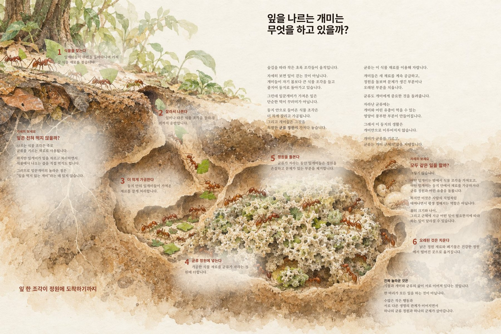
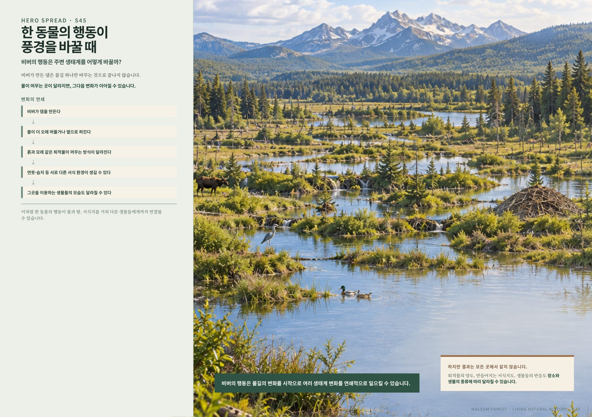
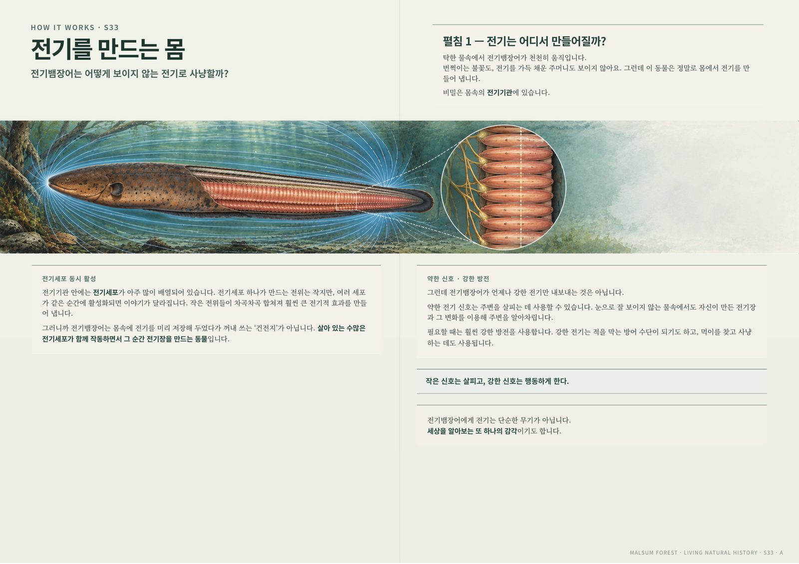
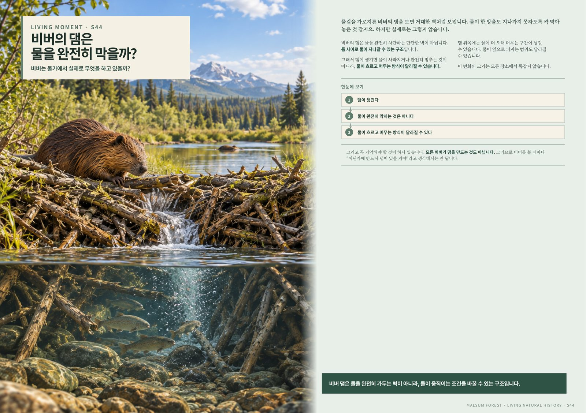
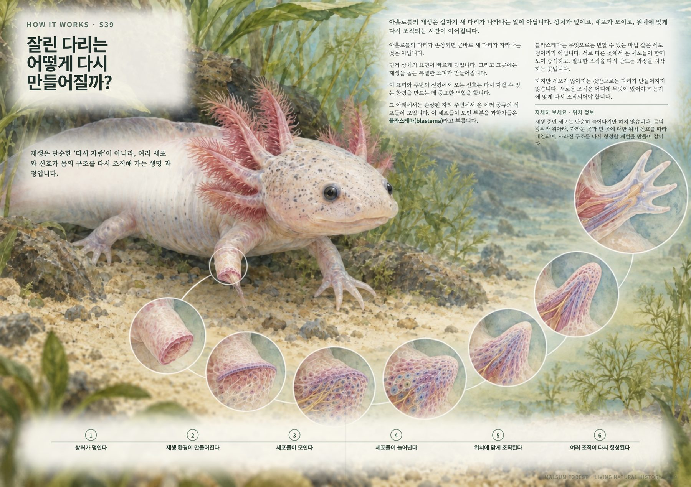
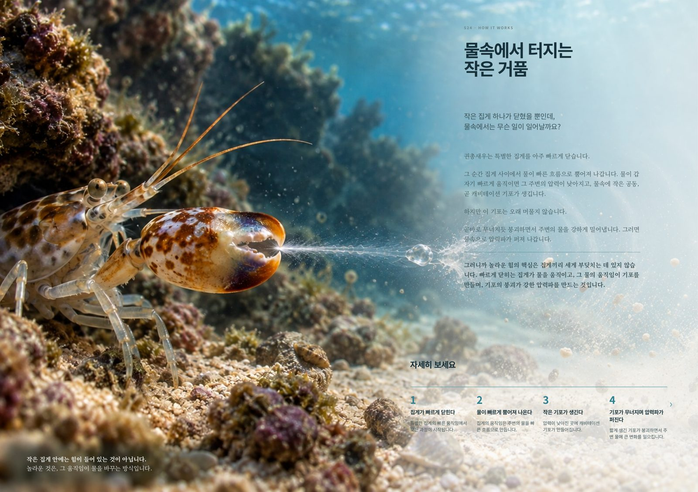
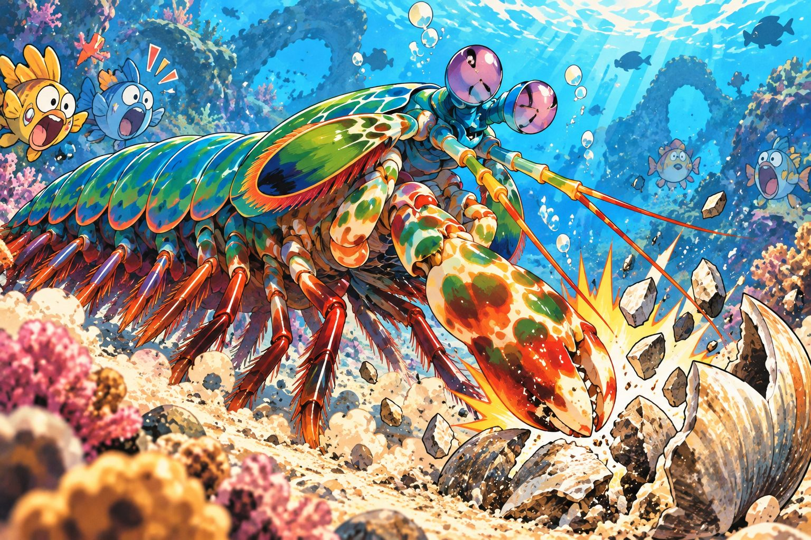
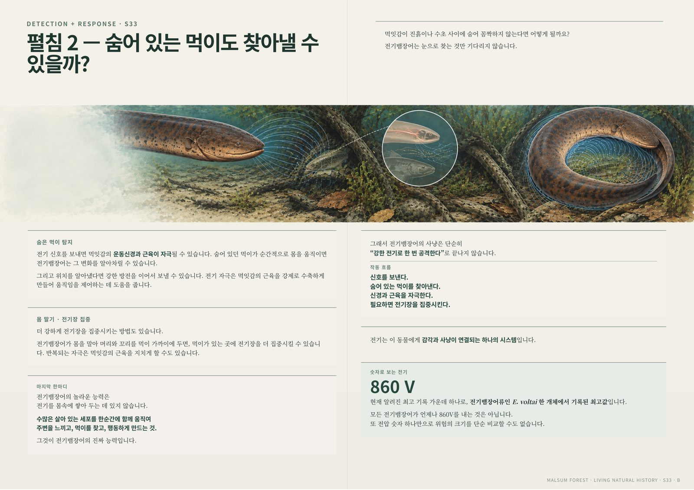

잎새개미 편
잎을 나르는 개미가 실은 균류 정원을 돌보고 있었다는 것을 보여주는 수채화 페이지.
Series 03 · 살아 있는 세계
살아 있는 세계는 동물 한 종을 관찰에서 그치지 않습니다. 눈에 보이는 행동이 만드는 풍경, 그리고 그 아래 숨어 있는 원리를 과학과 예술의 시선으로 함께 읽는 자연사 시리즈입니다.

이 책은 어떤 책인가
흔한 생물 도감은 생김새와 서식지를 나열하고 끝납니다. 살아 있는 세계는 한 걸음 더 들어갑니다. 먼저 눈에 보이는 행동과 장면을 보여 주고, 그 행동을 가능하게 하는 몸속 구조와 원리를 짚은 다음, 그것이 삶과 어떤 의미로 이어지는지를 함께 읽습니다.
그래서 이 책은 “이 동물은 이렇게 생겼다”로 끝나지 않고, “이 동물의 행동은 왜, 어떻게 가능한가”, 그리고 “그 관찰이 우리 삶에 무엇을 보여 주는가”를 함께 묻습니다.
“비버의 행동은 물길의 변화를 시작으로 여러 생태계 변화를 연쇄적으로 일으킬 수 있습니다. 이처럼 한 동물의 행동이 물과 땅, 서식지를 거쳐 다른 생물들에게까지 연결될 수 있습니다.”— 비버 편 페이지 중에서
책 속 여섯 편
전기뱀장어, 잎새개미, 비버, 아홀로틀, 권총새우, 맨티스새우 — 여섯 편을 차례로 만나게 됩니다. 편마다 지금 볼 수 있는 페이지와 그림이 조금씩 다릅니다.

전기뱀장어 편
보이지 않는 전기를 몸속 어디서, 어떻게 만드는지 — 전기기관과 전기세포의 배열을 다이어그램으로 풀어낸 편입니다.

잎을 나르는 개미가 실은 균류 정원을 돌보고 있었다는 것을 보여주는 수채화 페이지.

댐이 물을 완전히 막는 벽이 아니라 물이 흐르는 방식을 바꾸는 구조라는 것을 보여주는 편.

잘린 다리가 다시 만들어지는 여섯 단계를 세포 수준까지 따라간 페이지.

“물속에서 터지는 작은 거품” — 집게가 만드는 기포와 압력파를 다루는 편.

“사마귀새우의 산호초 대소동” — 눈 앞의 장면을 생생한 그림으로 만나는 편.
보이는 것에서 원리로

실제 페이지
이 페이지들은 내부 제작 과정에서 나온 자료입니다. 최종 인쇄·출간본과 다를 수 있습니다.
살아 있는 세계는 지금 만들어지고 있는 시리즈입니다. 이 페이지는 그 과정에서 미리 보여 드리는 프리뷰이며, 아직 최종 출간본은 아닙니다.
보이는 것 너머,
계속 관찰하고 있습니다.